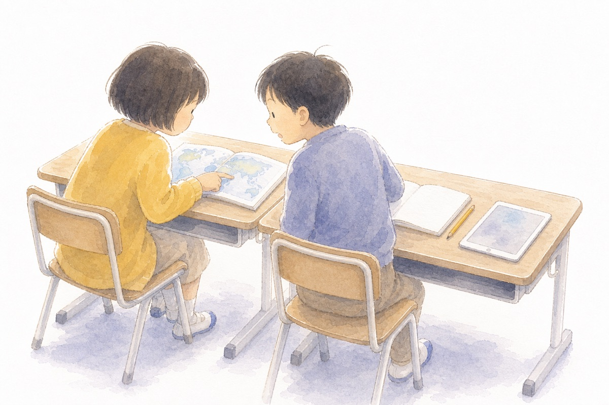
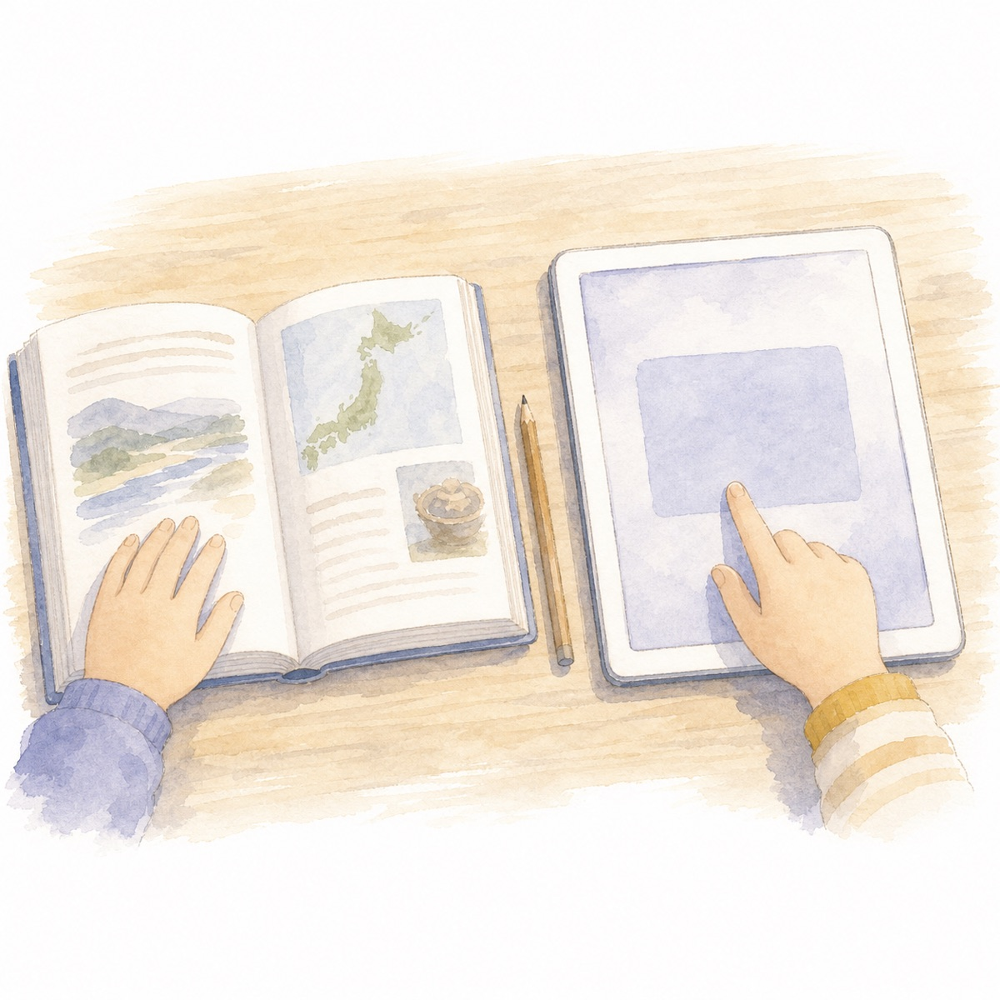

小学4年生から | 社会科
子どものためのプロンプトライブラリ
AIは、考える手助け。
書くのは、自分のことばで。
じゅぎょうの「いま」に合わせて、AIへの聞き方をえらべる社会科の道具箱です。こたえを写すためではなく、自分で考えるために使います。
いまの場面からえらぶ ▼
いま、学習のどこ?
社会科の学習は「つかむ → しらべる → まとめる → いかす」の順にすすみます。いまの場面をえらぶと、使えるプロンプトが出てきます。
AIのこたえは、ほんものでたしかめる
AIはまちがえることがあります。国や市など、情報を出しているところ(一次情報)を自分の目で見るのが、社会科の力です。

1
出どころを見る
だれが出した情報か。国・市・会社・こじん、どれかで信じられる度合いがかわります。
2
日付を見る
いつの情報か。古い数字は、いまとちがうことがあります。
3
くらべる
教科書・資料集・先生の話とくらべて、同じかどうかたしかめます。
ちず・土地
かず・グラフ
天気・ぼうさい
しごと・くらし
れきし・文化
まなぶ・うごき
つかいかた
やることは3つだけです。
1えらぶ
いまの場面に合うプロンプトをえらび、わくに書きこむ。
2はりつける
「コピーする」をおして、GeminiやNotebookLMにはりつける。
3自分のことばへ
AIのこたえをそのまま写さず、たしかめて、自分のことばで書く。
むずかしいページは、資料ごとAIに入れる
- 出どころを見る市役所・県・国・新聞社など、だれが出した情報かをたしかめる。
- 資料を入れるGeminiの「ファイルを追加」から、PDFやスクリーンショットを入れる。
- プロンプトをはるこのサイトで作った文をはりつけて、やさしく読み取ってもらう。
- 教科書とくらべるAIのこたえをそのまま信じず、教科書・資料集・先生の話とくらべる。
たんげんからさがす
いま勉強している単元から、使いどころをさがせます。
先生の方へ
このサイトは、社会科の問題解決的な学習の流れ(つかむ・調べる・まとめる・いかす)に沿って、児童が場面に合ったAIの使い方を選べるように作っています。プロンプトはどれも「答えを先に教えない」「そのまま写させない」設計です。
| 場面 | プロンプトのねらい |
|---|---|
| ① つかむ | 学習問題を追究する見通しをもつ(調べる順番・資料を決める) |
| ② しらべる | 資料から必要な情報を集める。情報の出どころ・日付・根拠を確かめる |
| ③ まとめる | 事実と考えを分け、根拠を入れて自分の言葉で表現する |
| ④ いかす | 学んだことを基に、社会への関わり方を選択・判断する |
「たしかめる」の一次情報リンクは、AIの答えを鵜呑みにしない態度を育てるために置いています。授業では、AIの答え → 一次情報 → 教科書の順で確かめる流れをおすすめします。
参考: 小学校学習指導要領解説 社会編、教育出版 令和6年度版『小学社会』年間指導計画・評価計画(案)。挿絵は自作(生成AIを補助に使用し、人の目で検品したものです)。